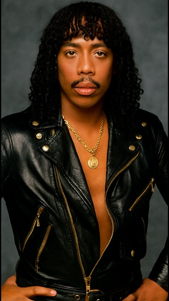

Rick James (born James Ambrose Johnson Jr.) was an American singer, songwriter, and producer best known for his flamboyant style and pioneering work in funk music. Born in Buffalo, New York he rose to fame in the late 1970s and early 1980s on the Motown label, he blended funk, rock, and R&B into a high-energy sound that helped define an era. His breakout hit “Super Freak” became a cultural touchstone, later sampled in MC Hammer’s “U Can’t Touch This,” and remains one of the most recognizable funk tracks of all time.
Beyond his biggest hits, Rick James was a prolific producer and collaborator, working with artists like Teena Marie and The Mary Jane Girls, and shaping the sound of modern R&B and funk. His life was marked by both creative brilliance and personal turmoil, including struggles with addiction and legal issues, but his influence on music, performance style, and pop culture is undeniable. Today, he’s remembered as a bold, genre-bending artist whose grooves still resonate on dance floors and playlists around the world.
